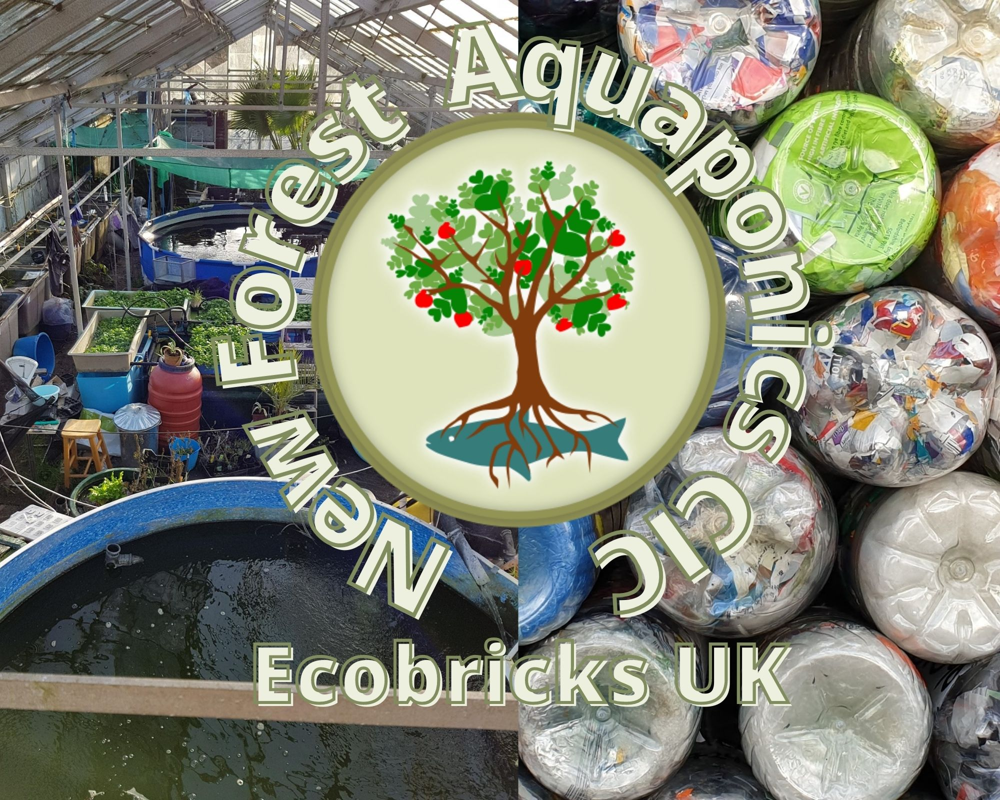

New Forest Aquaponics
Towards Transition through Aquaponics & Ecobricks
Dave & Lucie run New Forest Aquaponics Community Interest Company as a regenerative contribution to the biosphere, our community & people
Our History
Our love of aquaponics grew from our love of plants and fish.
After going through some tough times as a family we realised that families like ours need a place to recover and learn. We began to formulate our ideas.
Our Goals
We aim to provide a rounded, regenerative community that people can replicate across the UK.
This will include the growing of food, ecobricks and all the connections between.
We aim to be working examples of aquaponics and ecobricks benefitting communites.
Who we are
New Forest Aquaponics is the idea of David Green & Lucie Mann. David is a trained fish farmer and has worked with many species of fish over his 30-year career. Lucie loves to grow and make things.
Having seen the problems caused by poor farming - lack of nutrients in our food - lack of quality and freshness - plastic packing - high prices - environmentally and money wise we want to do something about it!
💚 💚 💚
To do this we are using our skills to develop the first aquaponics farm in the New Forest (south UK.) - We have been working at our site for the last few years, and we have a huge amount of equipment (recycled of course), but it is looking like we have to move very soon. This means we will need financial support to find our long term home for our aquaponics farm. You can read more about this in our Working Ethos document, and find out how you can help.
We are a Non Profit Community Interest Company (CIC), that will invest all money made back to the project.
As community is an important part of any farm we want to share the journey with others, why not see what part of this journey you can join us on? There is always something to do, and it is not always do do with growing food, we may just suprise you with the tasks that need doing :-) ..
In todays world so many of us need help and space to heal in one way or another. Healing happens with good food, a sense of belonging, a sense of purpose, and of being valued for the contrubution we can bring to the world. The experiances we have been through have shown us just how important this is, with a secure base to work from so we can really bring healing to our local community
Regenerative
Raising consciousness around food, community growth, and harmonious living within our biosphere. Starting with the children, these will focus around the aquaponic growing of edibles, with different programmes aimed at the target audience to focus learning and healing, whilst working together to raise awareness of environmental issues.
The Watercress Queen
This is Lucie's online persona. Why? Because she grows the watercress and eats lots of it! You can find her on Facebook, Instagram,Pinterest, and Twitter under that name. Links to all are at the bottom of each webpage where you will find regular updates on them.
Aquaponics
Aquaponics is the cultivation of plants in water that with aquatic organisms. Basically, fish provide organic fertilizer for the plants and the plants help clean the water for the fish! Aquaponics is our main focus. We need a long term home for New Forest Aquaponics so we can start aquaponic farming with co workers and volunteers, and really do our work!.
Ecobricks
We are very passionate about helping everyone to rediscover a more connected way of living, respecting our biosphere. As part of this, we have started working with ecobricks. Lucie and her son Robbie have trained as Global Ecobrick Alliance (GEA) Ecobrick trainers. They give talks and run workshops on how to reduce your plastic. Once we have our new home we will be able to build and help inspire people to use ecobricks within and for the benifit of their communities.
Working with the Global Ecobrick Alliance to educate about plastic and how we can change our attitude to its value within society.
Holding workshops on ecobricks and building with cob, getting more and more ecobrick trainers into communities. Regenerative programs
Contribute
Lots of ways to share your love
A non-profit is as strong as the community that holds it up. Together, we can do more than we can do alone. Let's bring our abilities and passions together to affect real change. Please support us on our journey - so we can go on and support others with food to love.
There are many ways to join us and support our mission. Our site is open source-- star our repository on Github and help us make it better.
Contact us to find out more about volunteer opportunities, fundraising events, and ways that you can get our message to your friends and family.
Leading by Example
We're a big beleiver in 'being the change you want to see in the world'. In order to do so, we carefully track our green and grey impacts so that we and you can be sure that we're an example worth following! We track our plastic, our CO2 and our biodiversity. Using the GEA's Catalyst program, we disclose our impacts publically.